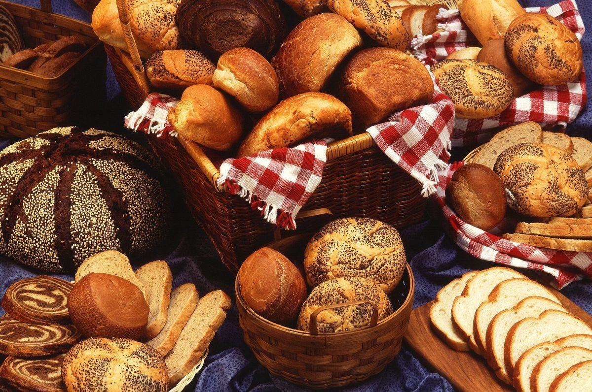

制作側の連想
卓上IHクッキングヒーターを、配置図にしてみる
このサイトは、卓上に置く調理器を真上から見た図のつもりで作りました。六つの部位に番号をふり、上の図と並べています。制作側の連想で、お店の理念・由来とは無関係です。実際の製品の仕様を示すものでもありません。
凡例
六つの部位
- 1トッププレート調理器具をのせる、耐熱ガラスの平らな天板。
- 2加熱コイルプレートの下に仕込まれた、渦を巻く線の輪。
- 3操作ダイヤル火力や切り替えをえらぶ、手前のつまみ。
- 4表示ランプ電源や加熱の状態を知らせる、小さな灯り。
- 5排気口本体の奥側にある、熱を逃がすためのすきま。
- 6電源コードコンセントにつなぐための、本体から伸びる線。
ギャラリー(イメージ)
パンとコーヒーの写真



写真はパンとコーヒーのイメージです。お店のものではなく、お店で提供している商品を示すものでもありません。
ご案内
お店のこと(確認できたものだけ)
| 所在地 | 〒930-0151 富山県富山市古沢651-3 |
|---|---|
| 電話 | 準備中 |
| 営業時間 | 準備中 |
| 定休日 | 準備中 |
| ご予約 | 準備中 |
| 駐車場 | 準備中 |
| SNS | Instagram @boulangerie_imamura |